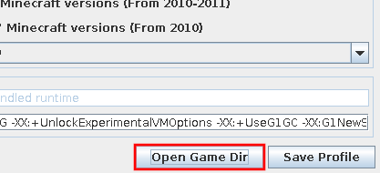
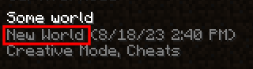

- Manual Index
- Manage Microsoft Accounts
- Manage Launcher Profiles
- Select the Game Version
- Change RAM Allocation
- Collect Launcher Logs
- Manage a Minecraft Profile
Manage a Minecraft Profile
Once you have been playing in a world for a bit, it is best to make copies of it in case it gets corrupted or mistakenly deleted. Or perhaps you want to access your screenshots or add a resource pack. All of those things (and more) reside in the profile’s directory.
Table of Contents
Open a Profile’s Directory
-
Open the profile editor.
You may do this using the Edit Profile button (Figure 1) on the bottom banner, or by double clicking a profile on the Profile Editor tab (Figure 2).

Figure 1: Profile selector
Figure 2: Profile editor tab -
Click Open Game Dir (Figure 3).

Figure 3: Open game directoryWorlds are in the
savesdirectory, screenshots inscreenshots, and resource packs inresourcepacks.
{kind=link}
Back up your Worlds
Note: Newer versions of the game have an option to back up worlds in-game. This guide is for those versions which do not.
-
Enter the
savesdirectory and find your world.The world’s folder name is the gray text below the world’s “official” name in the world list (Figure 4).

Figure 4: World name -
Make a copy of that world folder elsewhere.
You may use a tool of your choice to compress the world file into a
.zip.This backup may be restored by copying or extracting this folder into the
savesdirectory.
{kind=link}